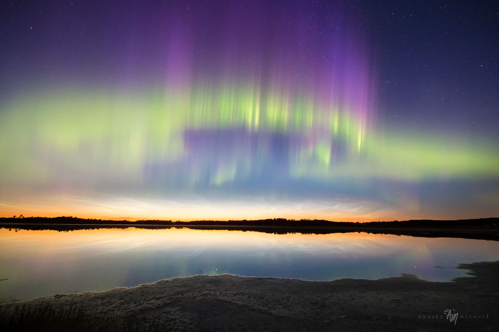

Northern Lights and Noctilucent Clouds
Luminous skies after the near-solstice sunset on June 17 are reflected in this calm lake. The tranquil twilight scene was captured near Bashaw, Alberta, Canada, northern planet Earth. Usually spotted at high latitudes in summer months, night shining or noctilucent clouds hang just above the horizon, transfusing light into a darker sky. Formed near the edge of space, the icy apparitions are condensations on meteoric dust or volcanic ash still in sunlight at extreme altitudes. Also near the edge of space on this short northern night, solar activity triggered the lovely apparition of aurora borealis or northern lights.